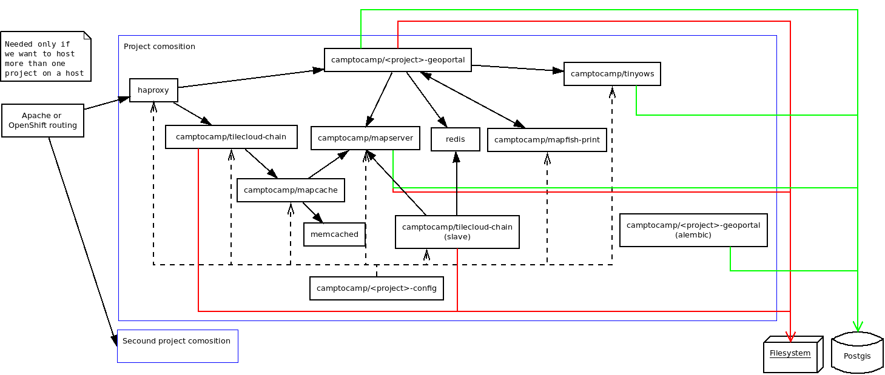

Use Docker to deploy your application¶
Architecture schema¶
Docker Images¶
When you build your application, the following images will be generated:
camptocamp/<package>_geoportal:latestcamptocamp/<package>_config:latest
The tag is by default latest, but you can change it by setting the DOCKER_TAG Makefile variable.
Docker compose files¶
docker-compose.yaml: The main file that describes the composition.docker-compose-lib.yaml: Provideis the base description of Geomapfish Docker services..env: Generated from.env.mako; contains the environment variables used by the composition.docker-compose-dev.yaml: Used to start a webpack dev server.docker-compose-build.yaml: Used by thedocker-compose-runscript.
Run the developer composition¶
docker-compose up -d
You can then access your application with http://172.17.0.1:8480/
Clean¶
Docker does not clean anything automatically, in particular it does not clean any images, therefore disk space may become problematic after a certain number of builds. You can use the following commands to manually remove Docker files.
If you use Docker version (docker --version) >= 1.13, use docker system prune to clean files;
you can add the --all option to do a deeper clean.
Otherwise:
docker ps --all --quiet --filter status=exited | xargs --no-run-if-empty docker rm
docker images | grep "<none>" | awk '{print $3}' | xargs --no-run-if-empty docker rmi || true
docker volume ls --quiet --filter dangling=true | grep '[0-9a-f]\{64\}' | xargs --no-run-if-empty docker volume rm
This will remove:
- Containers with exit status.
- Images with version on name as <none>.
- Unnamed dangling volumes.
In addition you may run the following script to get rid of unused temporary volumes:
#!/bin/bash
for vol in $(docker volume ls | awk '{print $2}' | grep -v VOLUME)
do
docker volume rm $vol
done
You can also remove the unused named images, that should be done manually:
- List the images with
docker images. - Remove the unwanted images with
docker rmi <image>:<tag>.
Configure Docker Hub publishing and OpenShift notifications¶
Note
This section is specific to projects using OpenShift for deployment, relying on Travis to build Docker images that are then pushed to Docker Hub.
While some parts of this documentation section may be relevant for other setups as well, this section describes primarily the typical steps performed by Camptocamp integrators in OpenShift.
Edit the file .travis.yml and update the environment variables:
env:
global:
- PROJECT=<package name>
- OPENSHIFT_PROJECT=gs-gmf-<package name>
- HELM_RELEASE_NAMES=int,prod
- OPENSHIFT_URL=https://api.openshift-ch-1.camptocamp.com/
- DOCKER_USERNAME=dockerhubc2c
- secure: <encrypted password>
The encrypted password is obtained using the travis encrypt command from
within the project directory:
cd <project directory>
travis encrypt DOCKER_PASSWORD=$(gopass gs/ci/dockerhub/password)
Make sure to add line breaks (escaping with \) when filling the secure
argument so that line length constraints are fulfilled.
More info about using gopass
Go to https://hub.docker.com/repositories and create repositories
<package>-geoportal and <package>-config in the Camptocamp
organization.
Clone https://github.com/camptocamp/private-geo-charts/ and create a file
helmfiles/gmf-<package>/travis.env:
TRAVIS_REPO=camptocamp/<package>_gmf
TRAVIS_ENDPOINT=https://api.travis-ci.com/
You have to push your changes to OpenShift:
./helmfile -l project=gmf-<package> -i apply --context 3
Go back to the root of the repo and update the project’s tokens by typing:
travis login
oc login
./get_ci_tokens